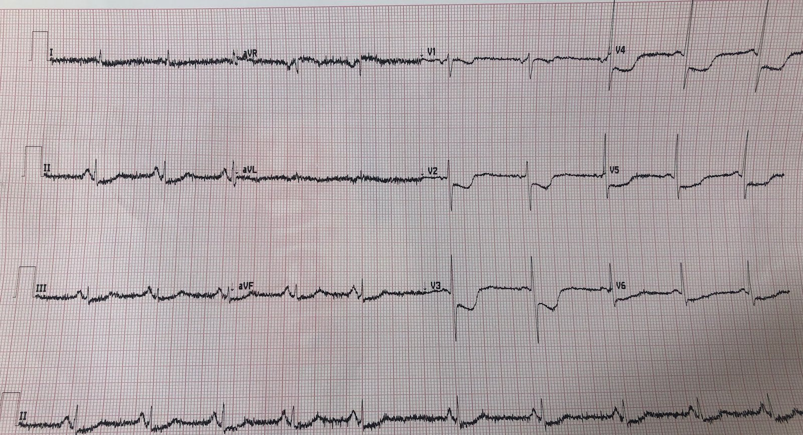
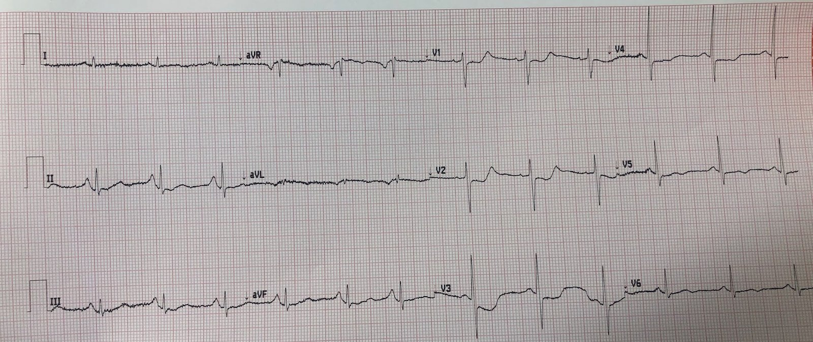
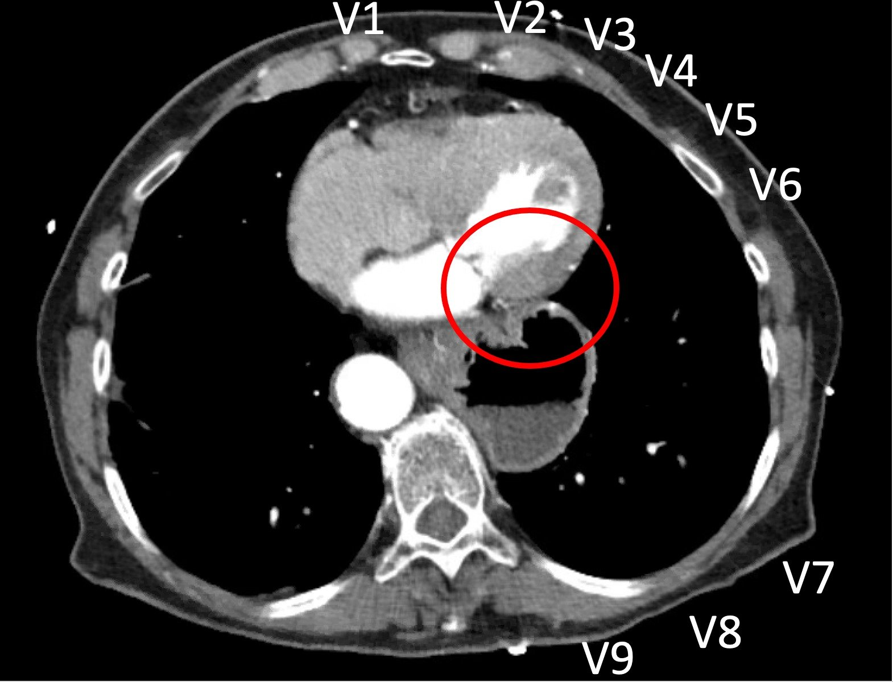

23/12/2020 — ST chênh xuống tối đa ở V1-V4 và chụp mạch vành cho thấy bệnh 3 nhánh mạch vành. Có phải nhồi máu thành sau? Đâu là thủ phạm?
Bản dịch tiếng Việt của bài "ST Depression Maximal in V1-V4 and Angio shows 3 Vessel Disease. Is it posterior? Which is the culprit?" – Dr. Smith’s ECG Blog. Giữ nguyên toàn bộ 3 hình ảnh của bản gốc.
Một phụ nữ 70 mấy tuổi bị đau ngực cấp.
Điện tâm đồ được nhắn tin cho tôi kèm lời nhắn: “Đau ngực cấp. Có thể đây là nhồi máu cơ tim thành sau không? Anh nghĩ gì về ST chênh xuống ở V4-V6?”


Bạn nghĩ sao?
Tôi trả lời: “ST chênh xuống tối đa ở V1-V4. Hình ảnh này phù hợp nhất với nhồi máu cơ tim thành sau. Nếu bệnh cảnh lâm sàng giống nhồi máu cơ tim cấp thì đây là lý do chính đáng để kích hoạt phòng thông tim (cath lab).”
Cô ấy đáp: “Vâng, tôi đã kích hoạt rồi. Nhưng bác sĩ nội trú chuyên khoa tim mạch (fellow) bảo tôi rằng anh ta chắc chắn đây không phải nhồi máu cơ tim thành sau vì ST chênh xuống lan tỏa. Anh ta cho rằng lẽ ra chúng tôi nên hội chẩn tim mạch thay vì kích hoạt phòng thông tim, và xử trí ca này như một nhồi máu cơ tim không ST chênh lên (NSTEMI).”
Tôi trả lời: “Điều đó không đúng. Có thể đây không phải nhồi máu thành sau, nhưng khoảng 80-90% trường hợp là nhồi máu thành sau nếu ST chênh xuống (STD) tối đa ở V1-V4. Vì vậy, nếu hóa ra không phải thì điều đó cũng không có nghĩa là anh ta đúng. Anh ta đã không đúng.”
Cô ấy đã cho dùng nitroglycerin, cơn đau giảm nhưng không hết, rồi ghi điện tâm đồ này:


ST chênh xuống vẫn còn nhưng không còn sâu như trước
Lúc đó tôi không biết điều này, nhưng vì trung thất giãn rộng trên X-quang ngực, họ đã chụp CT động mạch chủ và kết quả âm tính (tôi dùng một ảnh CT dưới đây để minh họa nhồi máu cơ tim “thành sau”).
Troponin I lần đầu trả về 4100 ng/L — khá cao đối với một nhồi máu cơ tim rất cấp, mức này thường gặp trong nhồi máu cơ tim bán cấp.
Kết quả chụp mạch vành (thực hiện khoảng 150 phút sau điện tâm đồ thứ 1):
Dòng chảy TIMI III nhanh vào tất cả các động mạch vành. Các mạch đoạn xa xoắn vặn nặng và vôi hóa mức độ vừa ở động mạch vành trái.
1. Thân chung động mạch vành trái: bình thường.
2. LAD: loại III. Hẹp 70% LAD từ đoạn gần đến đoạn giữa, tổn thương dài (~35 mm), vôi hóa mức độ vừa.
Một nhánh chéo ở phía xa chỗ hẹp có thành lòng mạch không đều.
3. LCX: Xoắn vặn, vôi hóa nhẹ, thành lòng mạch không đều ở thân mạch chính và hẹp 80-90% ở đoạn gần nhánh bờ tù (OM), tiếp theo là một chỗ hẹp 70% ở phía hạ lưu sau hai chỗ gập 90 độ. Một nhánh OM nhỏ hơn có thành lòng mạch không đều.
4. RCA: Tổn thương dài (>35 mm), hẹp 70% RCA đoạn giữa. RCA cấp máu cho một động mạch liên thất sau phải (RPDA) cỡ trung bình và một nhánh sau bên phải (RPLA) nhỏ
Như vậy có bệnh 3 nhánh mạch vành nặng, nhưng mọi động mạch đều thông với dòng chảy tốt. Điều này có vẻ ngụ ý rằng bác sĩ fellow đã đúng trong ca này, nhưng thực ra không phải vậy. Rõ ràng các động mạch không phải tất cả đều thông rộng (mở) tại thời điểm ghi điện tâm đồ, 150 phút trước đó. Tái tưới máu tự phát với dòng chảy TIMI-3 (bình thường) rất thường gặp, xảy ra ở tới 19% các STEMI đã được chứng minh (1). Khi một chỗ tắc (OMI) được tái tưới máu hoàn toàn như vậy, rất khó xác định thủ phạm trên phim chụp mạch vành, trừ khi thấy rõ một mảng xơ vữa loét trên phim — điều mà dường như không có, nếu không bác sĩ chụp mạch đã phát hiện ra.
Tuy nhiên, nếu chụp mạch vành được thực hiện đúng vào cùng thời điểm với điện tâm đồ đầu tiên, thủ phạm hẳn đã lộ rõ.
Việc đoạn gần nhánh OM (nhánh bờ tù tách từ động mạch mũ) bị hẹp khít như vậy khiến nó có khả năng là thủ phạm của nứt vỡ mảng xơ vữa cấp, nhưng không chắc chắn.
Hơn nữa, các động mạch “xoắn vặn” (đầy những khúc quanh co) nên bất kỳ PCI nào cũng sẽ khó về mặt kỹ thuật, vì vậy PCI được hoãn lại vào thời điểm đó để bàn về phẫu thuật bắc cầu chủ vành (CABG).
Troponin đạt đỉnh trên 21.000 ng/L. Đây là mức rất cao, phù hợp với STEMI/OMI hơn là NSTEMI, dù có khá nhiều chồng lấp. Phần lớn STEMI có troponin I trên 10 ng/mL (tương đương khoảng 10.000 ng/L), và phần lớn NSTEMI có troponin I dưới 10 ng/mL.
Siêu âm tim cản âm vi bọt (bubble contrast) chính thức: “Các dấu hiệu phù hợp nhất với thiếu máu cục bộ/nhồi máu ở vùng cấp máu của nhánh chéo và nhánh OM.” Điều này xác nhận nhồi máu cơ tim thành sau.
Bệnh nhân từ chối phẫu thuật bắc cầu (CABG), vì vậy được đưa trở lại để chụp mạch vành và can thiệp lần nữa.
Lần chụp mạch vành thứ 2, kèm can thiệp:
(Các) tổn thương thủ phạm: hẹp 80% đoạn gần OM1 trong bối cảnh mạch xoắn vặn đáng kể. PCI thành công chỗ hẹp đoạn gần nhánh OM.
Mọi điện tâm đồ sau đó vẫn còn ST chênh xuống (không trình bày ở đây), gợi ý hiện tượng không tái lưu (No Reflow). Không đo thêm troponin.
Những điểm cần học:
1. ST chênh xuống ở chuyển đạo trước tim, khi tối đa ở V1-V4 (so với V5-V6), là thay đổi soi gương (reciprocal) của ST chênh lên ở thành đối diện các chuyển đạo đó (tức thành sau, nay thường được gọi một cách dễ gây nhầm lẫn là thành “bên” — xem bên dưới) và chỉ điểm OMI thành sau trong 80-90% trường hợp.
2. ST chênh xuống lan tỏa, tối đa ở II, V5 và V6, thường do thiếu máu cục bộ dưới nội tâm mạc lan tỏa hơn và có ST chênh lên soi gương ở aVR.
3. Ngay cả khi có bệnh 3 nhánh mạch vành, thường một trong số đó là thủ phạm cấp, dù có xác định được hay không. Tuy nhiên, can thiệp có thể nguy hiểm, đó là một lý do khiến CABG thường được khuyến cáo.
4. 15-20% OMI đã được tái tưới máu vào thời điểm ghi điện tâm đồ. Troponin rất cao (TnI trên 10,0 ng/mL hay 10.000 ng/L; TnT trên 1,0 ng/mL hay 1000 ng/L) có thể giúp xác định liệu có tắc mạch tại thời điểm ghi điện tâm đồ hay không. Đây là một phần then chốt trong nghiên cứu điện tâm đồ của chúng tôi — khi đánh giá điện tâm đồ, chúng tôi cần xác định tình trạng của động mạch trong lúc ghi.
5. Siêu âm tim có thể giúp xác định ST chênh xuống ở chuyển đạo trước tim là do thiếu máu cục bộ dưới nội tâm mạc (không có rối loạn vận động thành, hoặc ít nhất không ở vị trí thành sau) hay do nhồi máu thành sau (rối loạn vận động thành (WMA) ở thành sau hoặc thành bên).
6. Nhồi máu cơ tim thành sau nay thường được gọi là nhồi máu thành “bên” (xem các bài của Bayes de Luna bên dưới). Tôi thích thuật ngữ cũ “thành sau” hơn (xem hình và giải thích bên dưới) vì nó phân biệt OMI CHỈ có ST chênh xuống (V1-V4) với OMI có ST chênh lên, kèm hoặc không kèm ST chênh xuống. Xem phần này:
Đây là ảnh chụp CT của bệnh nhân này


Vùng nhồi máu xuyên thành được viền bằng màu đỏ.
Đó là thành bên.
–Tuy nhiên, do tim nằm xoay trong lồng ngực, thành bên của tim hướng về phía lưng, đối diện trực tiếp với V1, V2 và V3.
–Các chuyển đạo phía sau V7-V9 hẳn đã cho thấy ST chênh lên (STE) nếu điện thế đủ cao.
–Toàn bộ phần phổi nằm giữa tim và V7-V9 có thể khiến điện thế QRS hoặc ST-T không đủ lớn!
–V1-V3 nằm đối diện trực tiếp với thành có ST chênh lên (bên dưới các chuyển đạo V7-V9), và do đó cho thấy ST chênh xuống soi gương.
–Vì vậy, gọi đây là STEMI thành sau sẽ phù hợp hơn là STEMI thành “bên”.
–Một STEMI thành bên sẽ cho thấy ST chênh lên trên điện tâm đồ 12 chuyển đạo ở V5 và V6 (hoặc ở các chuyển đạo bên cao I, aVL)
1. Cox DA, Stone GW, Grines CL, và cs. Comparative Early and Late Outcomes After Primary Percutaneous Coronary Intervention in ST-Segment Elevation and Non–ST-Segment Elevation Acute Myocardial Infarction (from the CADILLAC Trial). Am J Cardiol [Internet] 2006;98(3):331–7. Truy cập tại: http://www.sciencedirect.com/science/article/pii/S0002914906007168
Các bài của Bayes de Luna nhằm loại bỏ khái niệm “nhồi máu cơ tim thành sau”.
Tôi thấy rằng những ý tưởng này chỉ làm rối việc điều trị cấp cứu bất kỳ nhồi máu cơ tim do tắc (OMI) nào chỉ biểu hiện ST chênh xuống ở các chuyển đạo V1-V4. Khi lan truyền ý tưởng rằng không có nhồi máu cơ tim thành sau, họ lan truyền ý tưởng rằng những bệnh nhân không có ST chênh lên thì không có OMI (hoặc tương đương STEMI với vectơ ST chênh lên hướng về phía lưng).
… R wave in V1 is caused by a lateral not posterior myocardial infarction—new evidence based on contrast-enhanced cardiac magnetic resonance—electrocardiogram … (… sóng R ở V1 là do nhồi máu cơ tim thành bên chứ không phải thành sau — bằng chứng mới dựa trên cộng hưởng từ tim có tăng cường thuốc cản quang — điện tâm đồ …)
A Bayés de Luna, D Rovai, G Pons Llado và cs. – European Heart …, 2015 – academic.oup.com
Paperpile (công cụ quản lý tài liệu)
Từ năm 1964, sóng R cao và rộng ở V1–V2, khi không có phì đại
thất phải, blốc nhánh phải hoàn toàn hay hội chứng Wolff–Parkinson–White, đã
được coi là dấu hiệu của nhồi máu cơ tim (MI) thành sau. 1 Theo lý thuyết này … Được trích dẫn 21 lần Bài viết liên quan Tất cả 10 phiên bản Nhập vào BibTeX
Concordance of electrocardiographic patterns and healed myocardial infarction location detected by cardiovascular magnetic resonance (Sự tương hợp giữa các hình ảnh điện tâm đồ và vị trí ổ nhồi máu cơ tim đã lành phát hiện bằng cộng hưởng từ tim mạch)
AB de Luna, JM Cino, S Pujadas và cs. – The American journal of …, 2006 – Elsevier
Paperpile (công cụ quản lý tài liệu)
Vị trí nhồi máu cơ tim (MI) có sóng Q nhìn chung dựa trên một tương quan giải phẫu bệnh
được đề xuất lần đầu cách đây > 50 năm. Mặc dù hình ảnh cộng hưởng từ tim mạch có tăng cường thuốc cản quang
(CE-CMR) đã được chứng minh là đáng tin cậy trong việc phát hiện và định vị các vùng nhồi máu Được trích dẫn 84 lần Bài viết liên quan Tất cả 7 phiên bản Nhập vào BibTeX
[HTML] ahajournals.orgXem toàn văn
A new terminology for left ventricular walls and location of myocardial infarcts that present Q wave based on the standard of cardiac magnetic resonance imaging: a … (Một thuật ngữ mới cho các thành thất trái và vị trí các ổ nhồi máu cơ tim có sóng Q dựa trên tiêu chuẩn của hình ảnh cộng hưởng từ tim: một …)
A Bayes de Luna, G Wagner, Y Birnbaum, K Nikus và cs. – Circulation, 2006 – Am Heart Assoc
Paperpile (công cụ quản lý tài liệu)
Điện tâm đồ là công cụ được dùng thường xuyên nhất để đánh giá nhồi máu cơ tim (MI). Điện tâm đồ
cho phép mô tả vị trí và mức độ lan rộng của ổ nhồi máu, biểu hiện dưới dạng
sóng Q bệnh lý hoặc các tương đương của chúng. Thuật ngữ dùng cho các thành thất trái (LV) …